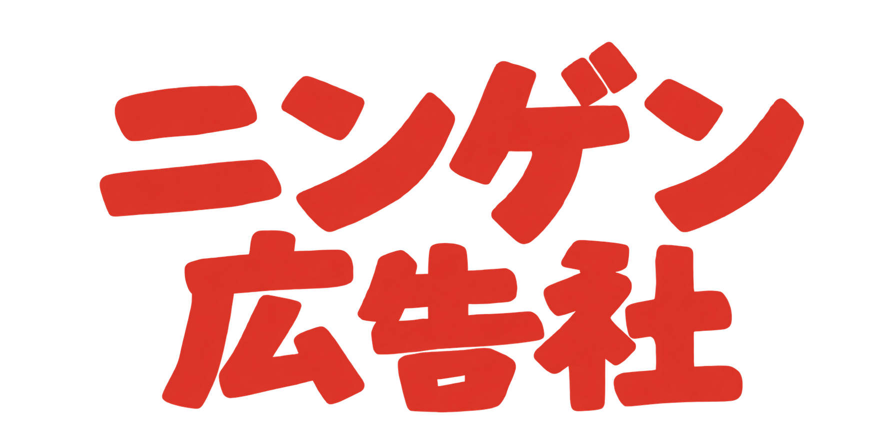

企画書まとめておいてと言われましても《ニンゲン広告相談所》 ＃57
今回は、参加した打ち合わせの最後の最後に先輩から「ってことで、今回の議論を企画書にまとめておいてもらえる？」と言われた時にどうしたいいかわからない、という若手の方のお悩みです。わかる〜〜。ていうか先輩側として分かる〜〜。勉強としてもやってほしいし、叩き台としてもやってほしい〜〜。ということで先輩視点でお悩みに答えます。

今回は、参加した打ち合わせの最後の最後に先輩から「ってことで、今回の議論を企画書にまとめておいてもらえる？」と言われた時にどうしたいいかわからない、という若手の方のお悩みです。わかる〜〜。ていうか先輩側として分かる〜〜。勉強としてもやってほしいし、叩き台としてもやってほしい〜〜。ということで先輩視点でお悩みに答えます。